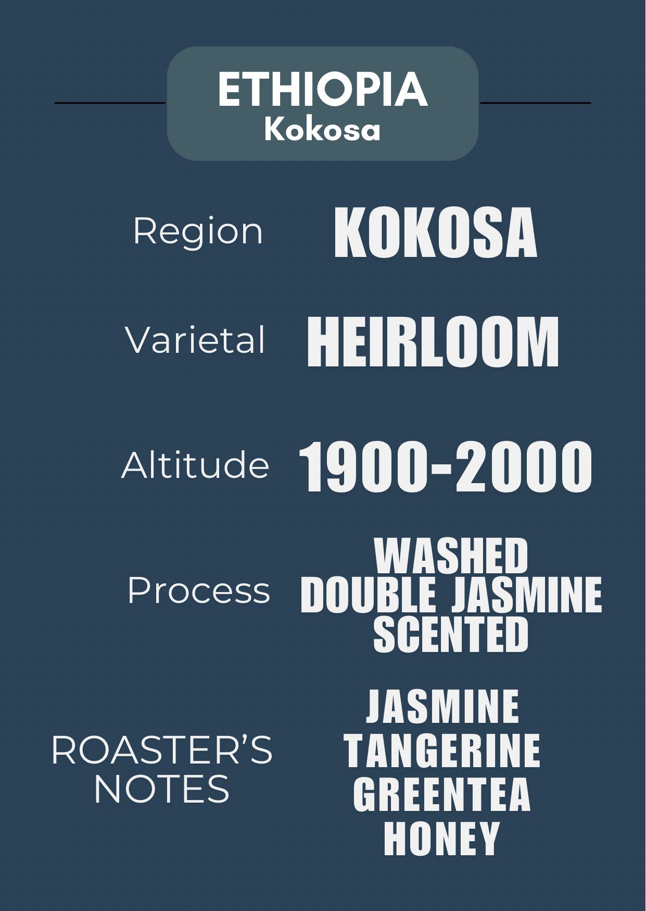

当前豆单
Coffee Beans





我们位于柔佛古来（Kulai, Johor），专注于精品咖啡。店内所有的咖啡豆均由我们自家进行小批量烘焙，以确保风味的干净与稳定。
Located in Kulai, Johor, we focus on specialty coffee. All beans are roasted in-house in small batches to ensure clarity and consistency.

我们追求平衡且具辨识度的风味。通过对每一批生豆的精准控制，呈现出不同产区应有的地域特性。
We seek balanced and distinct flavors. Through precise control of every batch, we highlight the unique terroir of each origin.